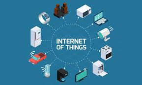

Dalam beberapa tahun terakhir, dunia teknologi mengalami perkembangan yang sangat pesat. Salah satu inovasi yang menjadi pusat perhatian adalah Internet of Things (IoT) — sebuah konsep yang memungkinkan berbagai perangkat fisik terhubung ke internet dan saling berkomunikasi secara otomatis. IoT telah mengubah cara kita hidup, bekerja, dan berinteraksi dengan lingkungan di sekitar kita. Bayangkan saja, kamu bisa mengontrol lampu rumah, menyalakan AC, atau memantau kamera keamanan hanya melalui smartphone. Semua itu merupakan hasil nyata dari penerapan IoT dalam kehidupan sehari-hari.Internet of Things (IoT) adalah jaringan perangkat yang saling terhubung melalui internet dan dapat bertukar data secara real-time tanpa memerlukan interaksi manusia secara langsung. Perangkat ini bisa berupa sensor, kendaraan, mesin industri, perangkat rumah tangga, bahkan pakaian pintar (smartwear). Setiap perangkat IoT biasanya memiliki: Sensor untuk mengumpulkan data, Konektivitas internet untuk mengirim data, Perangkat lunak (software) untuk mengolah data, dan Aksi otomatis berdasarkan informasi yang diterima. Dengan kombinasi ini, IoT mampu menciptakan sistem yang lebih efisien, cerdas, dan responsif terhadap kebutuhan manusia.
Teknologi IoT memungkinkan peralatan rumah tangga seperti lampu, AC, kulkas, dan sistem keamanan untuk dikendalikan melalui aplikasi di ponsel. Kamu bisa menyalakan lampu sebelum tiba di rumah, atau mengatur suhu ruangan secara otomatis
Teknologi IoT memungkinkan peralatan rumah tangga seperti lampu, AC, kulkas, dan sistem keamanan untuk dikendalikan melalui aplikasi di ponsel. Kamu bisa menyalakan lampu sebelum tiba di rumah, atau mengatur suhu ruangan secara otomatis
Jam tangan pintar seperti Apple Watch atau Mi Band menggunakan IoT untuk memantau detak jantung, kadar oksigen, dan kualitas tidur. Data ini kemudian dapat dikirim ke aplikasi kesehatan untuk membantu dokter menganalisis kondisi pasien secara real-time.
Mobil modern kini dilengkapi sensor IoT yang mampu mendeteksi posisi kendaraan, kondisi mesin, hingga mengirimkan data perawatan. Bahkan, teknologi self-driving car seperti yang dikembangkan Tesla juga berbasis IoT.
IoT juga membantu para petani memantau kelembapan tanah, cuaca, dan kebutuhan air tanaman melalui sensor otomatis. Hal ini membuat hasil panen lebih efisien dan ramah lingkungan.
Di sektor industri, mesin-mesin dilengkapi dengan sensor IoT untuk memantau performa dan mendeteksi kerusakan sebelum terjadi kerugian besar. Konsep ini dikenal dengan istilah Predictive Maintenance.